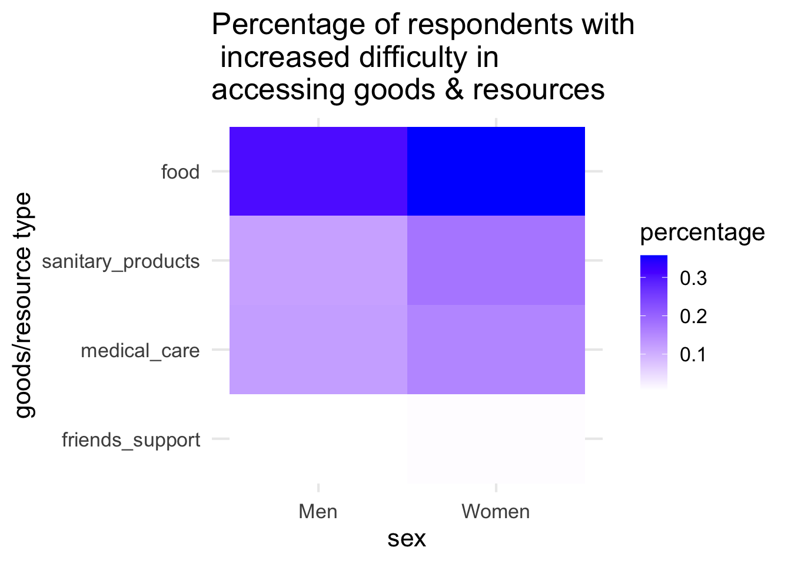

Chapter 4 Results
4.1 Summary
Females are disproportionately affected by the pandemic in many aspects. First of all, as the worldwide healthcare workforce is made up of around 70% of females, it is not surprising that a much higher number of female health workers worldwide have been infected with COVID-19 than male health workers (female:male \(\approx\) 3:1); however, considerably less female health workers have died from the disease than male workers (female:male \(\approx\) 2:3).
Overall, women are more negatively impacted by the pandemic in terms of economic activities, more likely to be burdened with increased domestic and care work as a result of the pandemic, and more likely to face increased difficulty in accessing goods and resources as a result of the pandemic.
4.2 WHO COVID-19 Detailed Surveillance Data Dashboard
It can be observed from the plot that a much higher number of female health workers worldwide have been infected with COVID-19 than their male counterparts, approaching a ratio of 3:1 (female:male). This result is expected since the majority of the health workforce all over the world are female. However, even though much more female workers have gotten COVID-19 than male workers, the former are much less likely to have died of COVID-19 than the latter, as the number of worldwide health worker deaths resulted from COVID-19 approaches a ratio of 2:3 (female:male).
4.5 Survey on Socioeconomic Impacts of COVID-19
4.5.1 Impact on economic activities
It can be observed that compared to men, women are more likely to lose their jobs and suffer from increased work hours after the pandemic. However, it is shown that women are also more likely to be covered by unemployment insurance than men, and that men are slightly more likely to suffer from income loss than women as a result of the pandemic.
4.5.2 Impact on unpaid domestic and care work
It can be observed that women are more likely than men to be burdened with at least one increased domestic activity, at least one increased adultcare activity, and at least one increased childcare activity. It is also worth noting that, on the contrary, men are more likely than women to have received support from their spouse for domestic and care activities.
4.5.3 Impact on access to goods and resources

It can be observed that after the pandemic, compared to men, women are more likely to face increased difficulty in accessing food, sanitary products, and medical care (women have darker/bluer shades in these categories in the plot). Men and women are about equally likely to get support from relatives and friends.